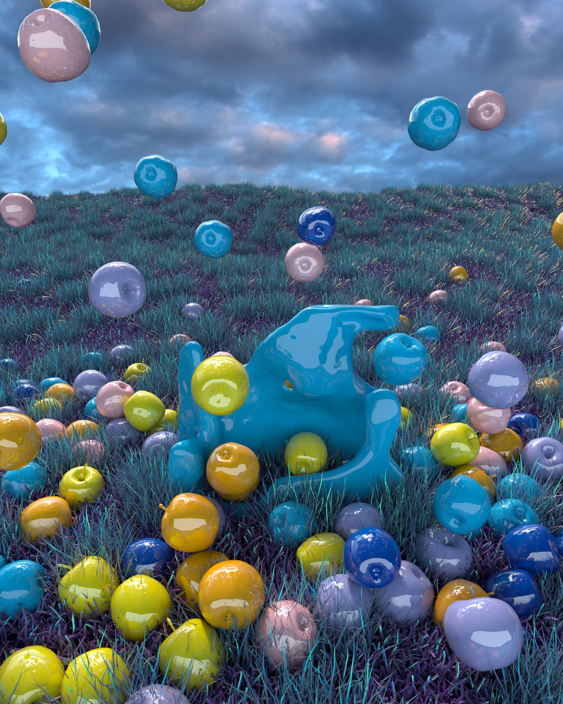
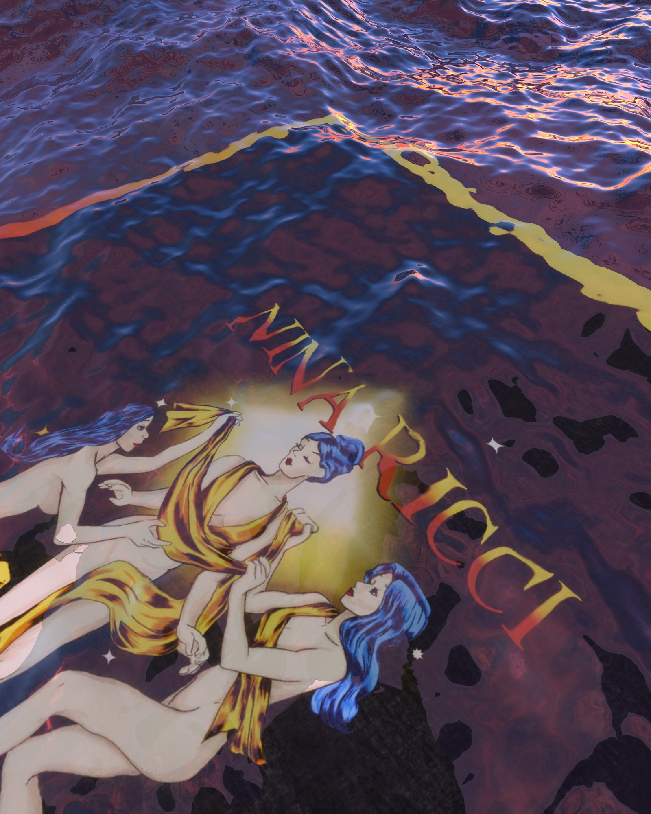
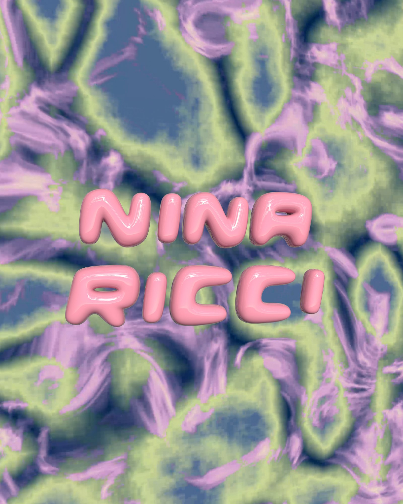
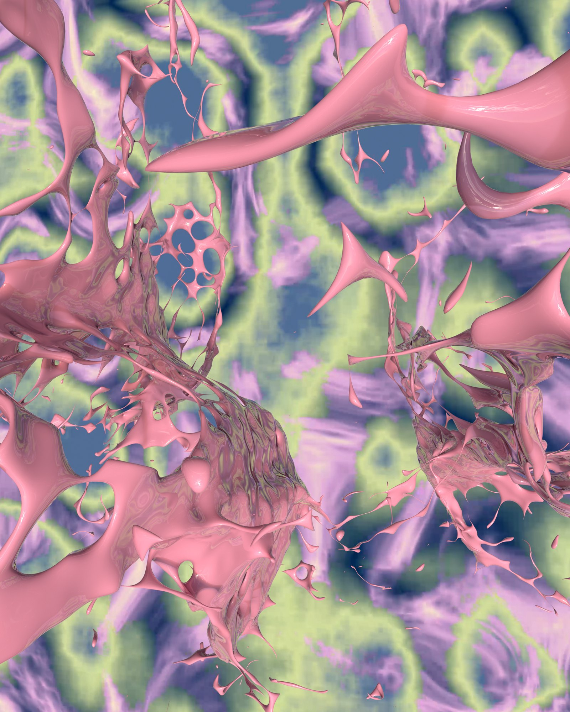

NINA RICCI
A logo animation and a series of animations about the brand’s symbols and summer items — doves, the apple and the Three Graces. 3D modelling, animation and render; shown on the brand’s website and social media.
co-art direction with Javier Sola
Vertical versions, 9:16
4:5 versions
Stills











3D models from the scenes — drag to rotate